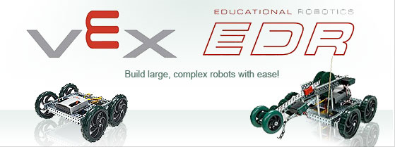
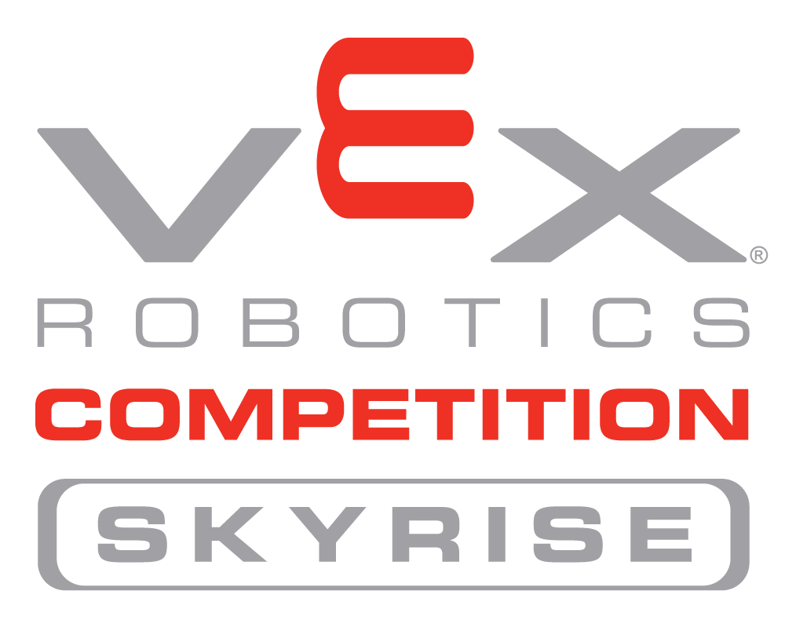

VEX Robotics
 What is VEX Robotics?
VEX Robotics is an extra-curricular, educational program that offers students an exciting platform for learning about areas with career opportunities spanning science, technology, engineering and math (STEM). Besides science and engineering principles, VEX promotes teamwork, leadership and problem solving in an environment where students can meet a variety of other people. VEX provides a variety of customizable diffuculty levels that can be adapted to meet the level of the student's abilities. VEX is available as educational sets for the classroom as well as professional competition sets used in the international VEX Robotics competition.
Education
VEX Education is dedicated to providing engaging and fun student experiences that enable individuals to reach their full potential while they develop the knowledge and skills vital to success in the 21st Century. Given today’s global challenges compared to the rest of recorded history, there has never been an age with a greater need for new scientists, engineers and problem solving leaders. Recent breakthroughs in chemistry, medicine and physics have revealed a new set of challenges and created even greater opportunity for problem solving through technology. This underscores a dramatic challenge: there are not enough students choosing related paths to meet that global demand.
Recognizing this dilemma, scores of governments and organizations are turning toward programs that integrate science, technology, engineering and mathematics (STEM) as a means to meaningfully engage and develop the next generation. VEX Education exists to help schools focus on practical, affordable and accessible ways of delivering dynamic hands-on STEM educational experiences to as many students as possible. Mixing the excitement and motivation associated with competition and real-world applications of mathematics and science concepts through the use of the engineering design process, we focus on addressing current educational and societal needs on many levels.
The study of robotics, by its very nature, captures all four legs of STEM very well while a competitive environment increases motivation and desire to succeed, thus creating classroom environments where both knowledge and skill development can flourish without having to compromise one for the other. Whether it’s our classroom competition products, our classroom lab packages, one or more of our curriculum options, selections from our free education resources or some combination of them all, VEX Education continues to be a world-leader in classroom robotics applications and stands poised to help schools meet the growing global demands of the 21st Century.